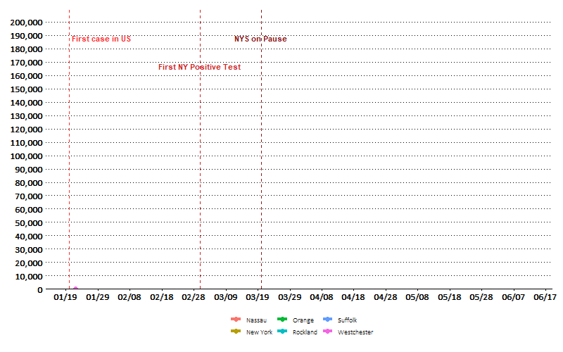
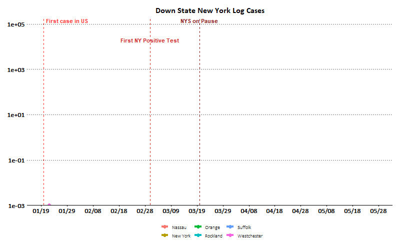
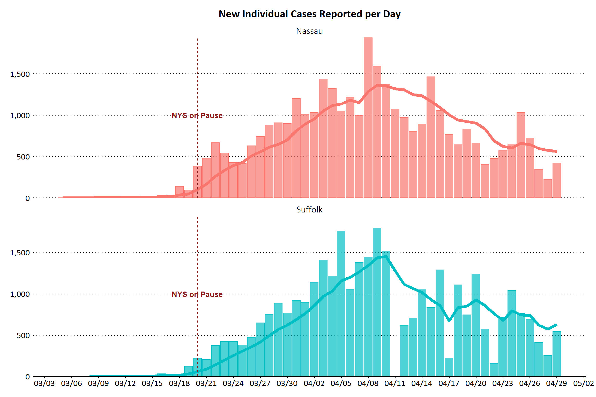
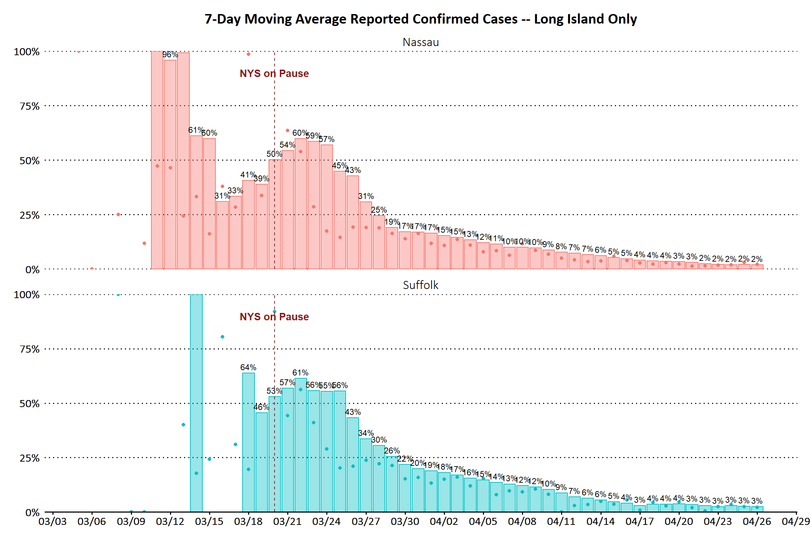

Coronavirus Data Analysis for New York
Last updated on 05/07/2020 at 09:51:30
Data
| Cases Today | Cases Yesterday | New Cases | Deaths Today | Deaths Yesterday | New Deaths | |
|---|---|---|---|---|---|---|
| United States | 1,158,040 | 1,132,539 | 25,501 | 67,682 | 66,369 | 1,313 |
| New York | 316,415 | 312,977 | 3,438 | 24,708 | 24,198 | 510 |
| Long Island | 71,635 | 70,997 | 638 | 3,026 | 2,972 | 54 |
Downstate New York
In absolute terms, New York City cases have well outpaced the rest of downstate New York:

The NYS on Pause measure appears to have been effective at slowing the growth rate of the virus, illustrated by a bending curve when viewing the same data on a log scale.

Long Island

Deaths have also been increasing at a slower pace due to social distancing measures, though the effect on COVID outcomes (i.e., hospitalizations and deaths) is lagged considerably more than confirmed cases.

The 7-day moving average further illustrates the decline in growth of cases.
These four charts represent the growth of cases and deaths for each county:


These four charts represent the absolute number cases and deaths per day for each county. The line represents the 7-day moving average, which smooths out data irregularities: